Steward
分享是一種喜悅、更是一種幸福
手機 - F(x)tec Pro1 X - 手機殼
參考資訊：
https://eskerahn.dk/?p=3620
https://www.thingiverse.com/thing:4617029
https://nyanonon.hatenablog.com/entry/20211206/1638770570
https://www.printables.com/model/267403-fxtec-pro1x-case/files
司徒不習慣貼保護膜和保護殼，而要幫Pro1 X找手機殼的主要原因，其實是為了讓打字手感更好
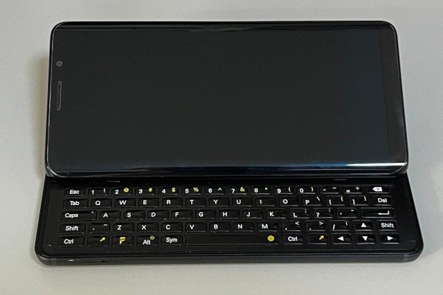
底座薄了一點
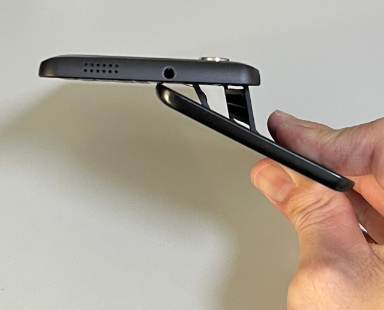
目前市面上並沒有Pro1 X的手機殼，不過，倒是有熱心的網友製作Pro1的外殼
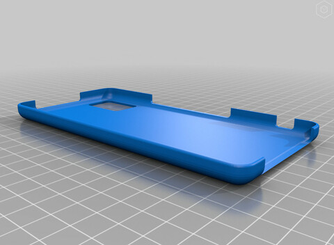
使用3D印表機列印
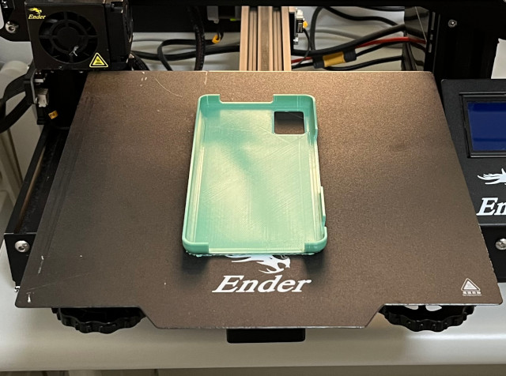
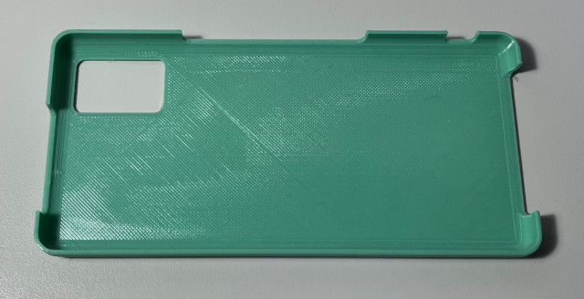
印出來的殼小了一點
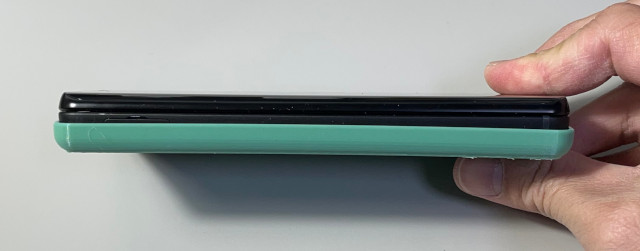
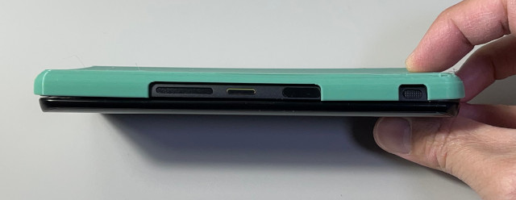
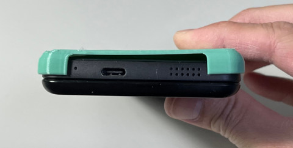
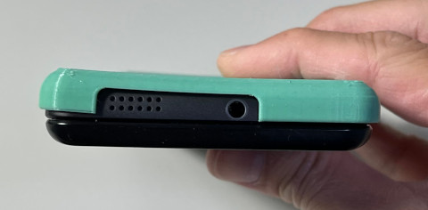
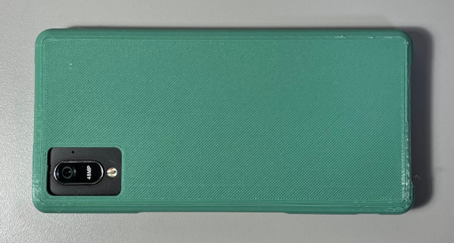
另一個3D外殼
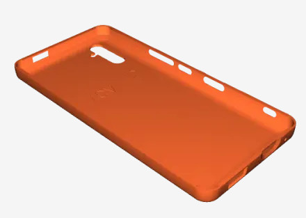
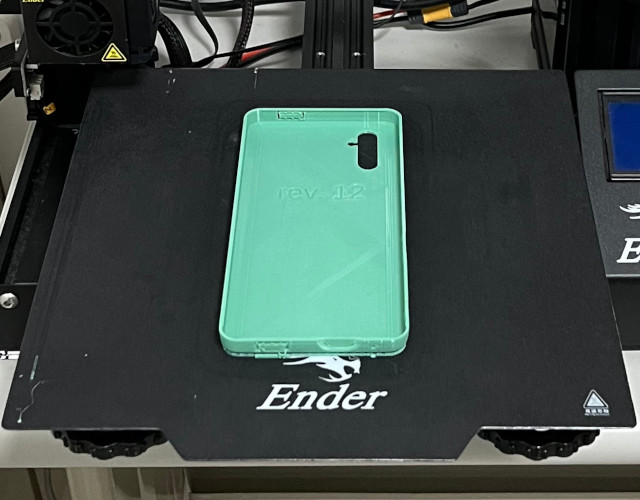
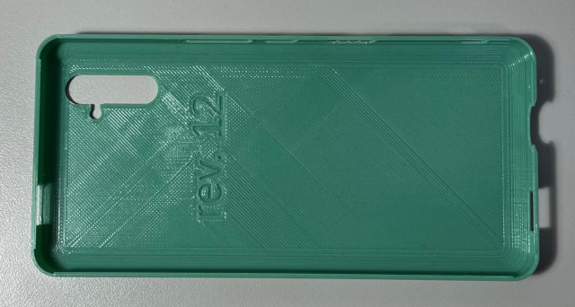
竟然完美結合，這個3D外殼相當適合拿去給廠商列印
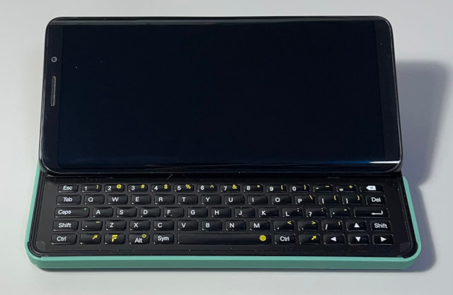
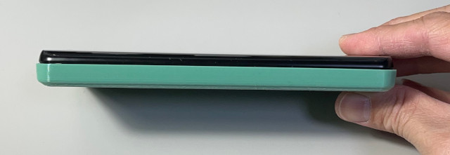
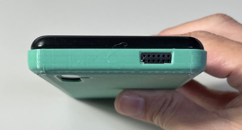
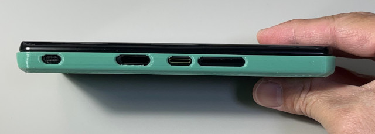
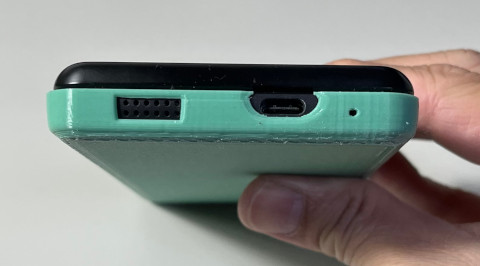
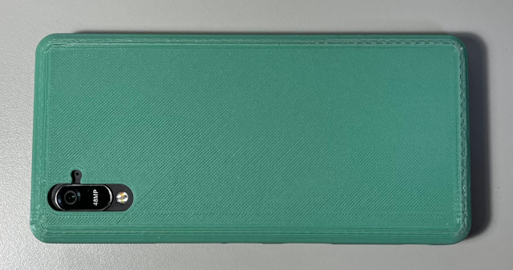
網友推薦使用Huawei P20 Pro手機殼，據說是最適合Pro1 X使用的手機殼，不過，需要注意的是，規格是無邊框手機殼
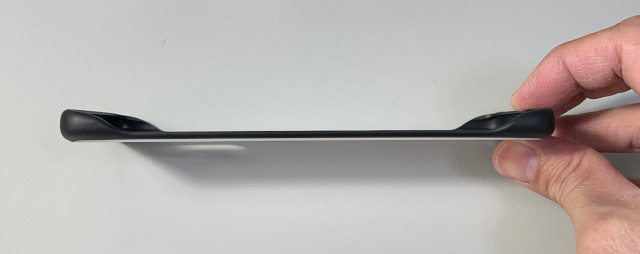
安裝後，看來還蠻符合的，這個手機殼的底面是使用硬殼材料，側邊則是軟殼材料
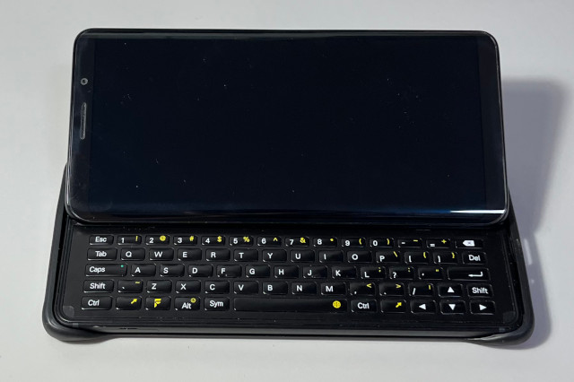
音量孔沒有對齊
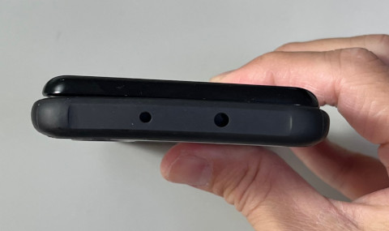
由於是無邊框，所以按鍵都可以正常使用
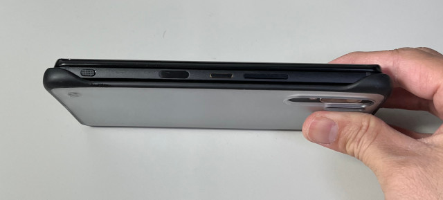
USB-C沒有對齊
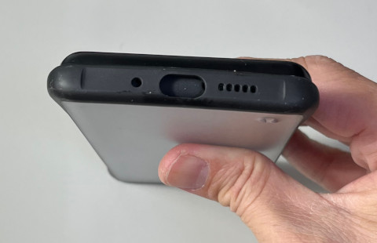
卡槽可以正常使用
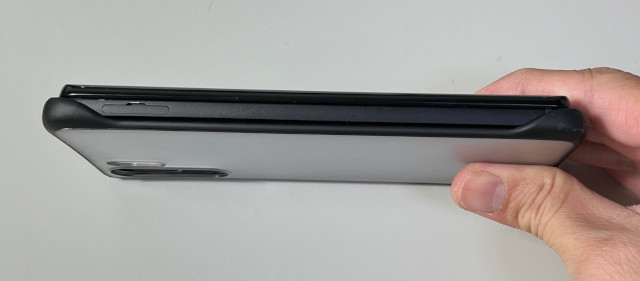
相機也可以正常使用
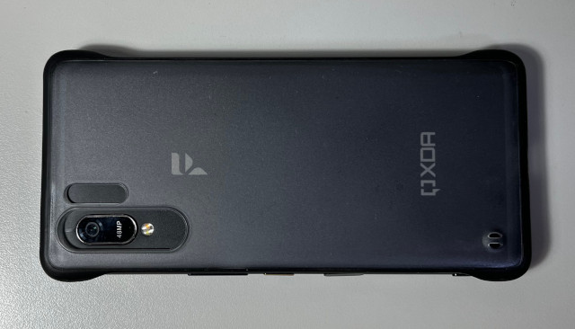
最大缺點是邊框容易脫落，沒有很吻合的咬住Pro1 X
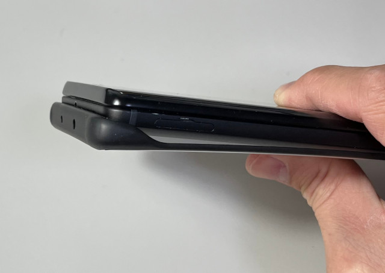
切割USB-C後的保護殼，可以看出Huawei P20 Pro手機殼還是有點小
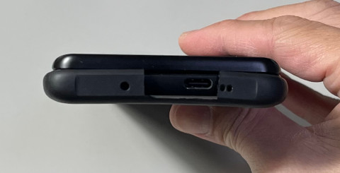
基於某種緣份下，手機店老闆娘推薦司徒使用iPhone的手機殼試試，這個手機殼的底面材料是硬殼，側邊則是軟殼材料，不過司徒忘記這個到底是哪款iPhone型號
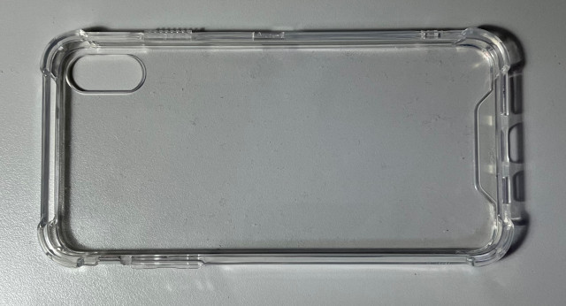
卡槽沒有對齊
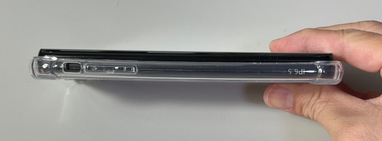
耳機孔沒有對齊
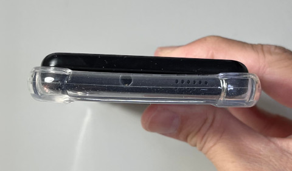
按鍵沒有對齊，不過按鍵都有被包覆著(圓弧包覆)，所以不會有誤壓問題，司徒使用美工刀切開電源鍵，這是唯一需要使用到的按鍵
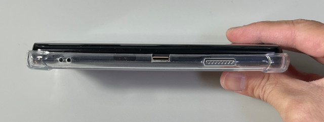
USB-C沒有對齊
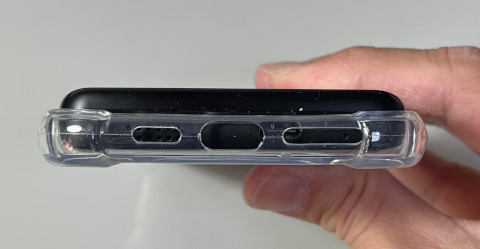
相機沒有對齊
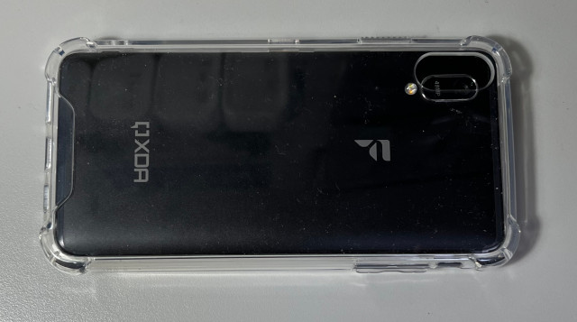
唯一的優點就是相當適合司徒的手～
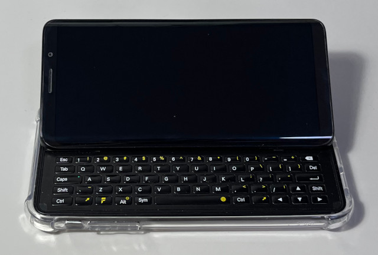
這個保護殼是目前手感最好的一個，於是，司徒再度使用美工刀裁切，裁切這邊的原因是要幫助屏幕順利推出，司徒習慣使用雙手推出螢幕
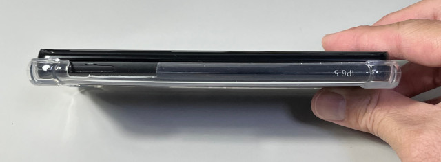
底部裁切，這樣就可以使用USB-C充電
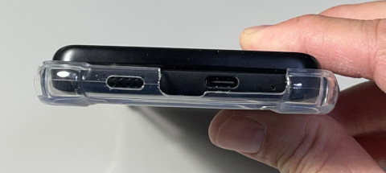
裁切後的電源鍵位置
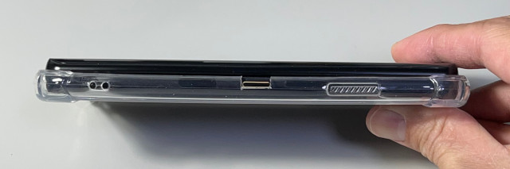
耳機孔用不到，所以沒有裁切
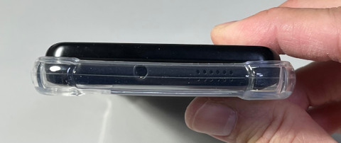
裁切相機孔位置，讓底部更貼合
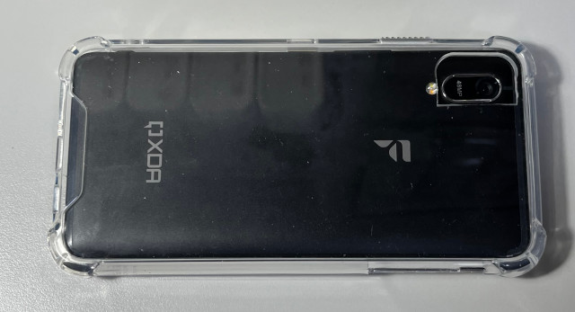